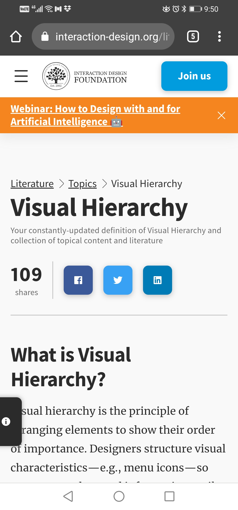
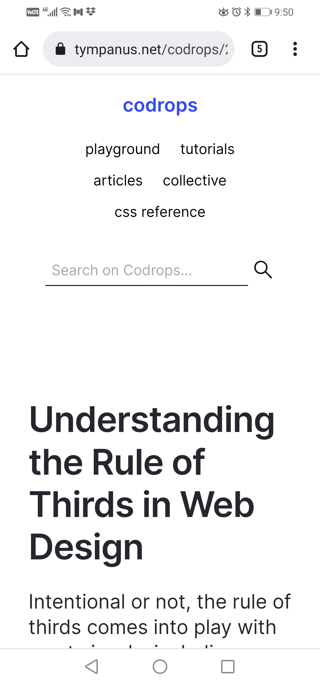
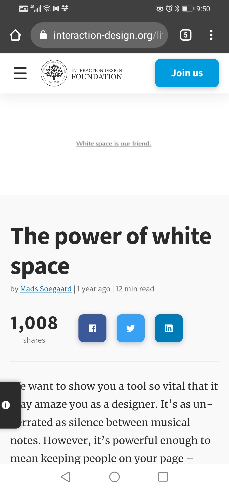

Visual Hierarchy
Interactin Design Foundation
www.interaction-design.org The page has a brief explanation on what Visual Hierarchy is. It also explains more on the building blocks of visual hierarchy, how to craft a strong visual hierarchy, things to Watch regarding Visual Hierarchy and finally it gives external links to learn more about visual hierarchy.
Rule of Thirds
codrops
tympanus.net The page explains what the rule of thirds is and how it works. It also gives some images as examples and gives tips on how to design pages using the rule of thirds.
White Space and Clean Design
Interactin Design Foundation
www.interaction-design.org The page explains what white space is and the power of white space in our pages. It also explains the difference between Micro and Macro white space, and when to use these two.